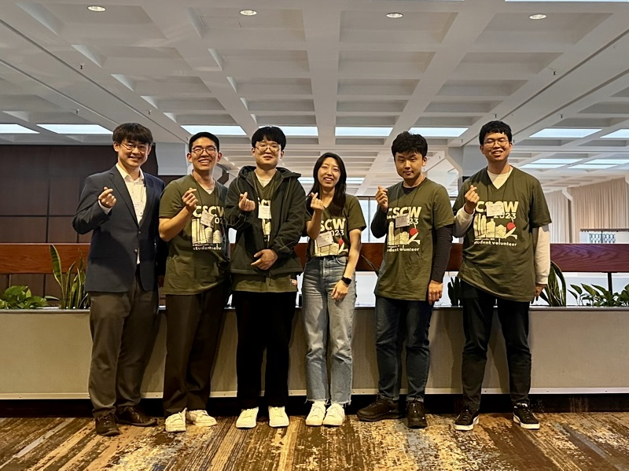

Human-Centered Artificial Intelligence Lab
 HCAIL group photo at CSCW’23 in October 2023!
Welcome to the Human-Centered Artificial Intelligence Lab (HCAIL)!
We are a research group
in the Department of Computer Science and Engineering
at the University of
Seoul.
We enjoy working on the intersection of multiple domains:
Human-centered AI, Digital Health, Social Computing,
and Accessibility & Aging.
We are pursing research in the combinations of the following directions:
- Artificial Intelligence
- Health Informatics
- Human-Computer Interaction
Our mission is to advance AI research through design and engineering to support individuals with special needs.
Interested in joining HCAIL as a MS or PhD student?
We have an opening position for a fully-funded MS and PhD student starting Fall 2024. Visit [석사과정/박사과정 모집공고]. Send your resume to me so that we can discuss about how to join HCAIL a MS or PhD student. For Full 2024, we aim to admit up to 2-3 new MS or PhD students.
HCAIL 연구실 자료 참고바랍니다: [슬라이드] [영상]
Interested in a research opportunity for undergraduate students?
Visit [학부연구생 인턴 모집공고] and send your resume to me if you are interested in a unique research intern opportunity. HCAIL is ready for maximizing your research potential during your internship.
news
| Jan 2024 | Welcome! Yubin Kim joined HCAIL as a undergraduate research intern! |
|---|---|
| Dec 2023 | Welcome! Seonghwan Oh joined HCAIL as a undergraduate research intern! |
| Dec 2023 | Four papers have been accepted to appear at the HCI Korea 2024 (February 2024). |
| Dec 2023 | Welcome! Dahyun Jeong joined HCAIL as a undergraduate research intern! |
| Oct 2023 |
Hyunmin, SeungYoung, Sungmin, Taewon, and Yunseo served as a student volunteer at
CSCW’23
successfully! |
selected publications
-
JMIRA novel food record app for dietary assessments among older adults with type 2 diabetes: development and usability studyJMIR Formative Research Feb 2021